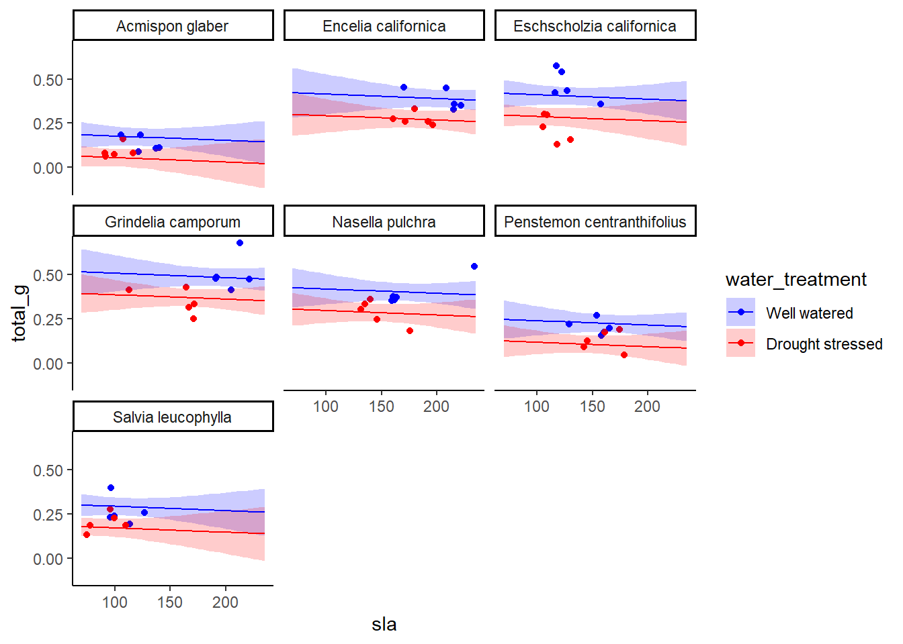
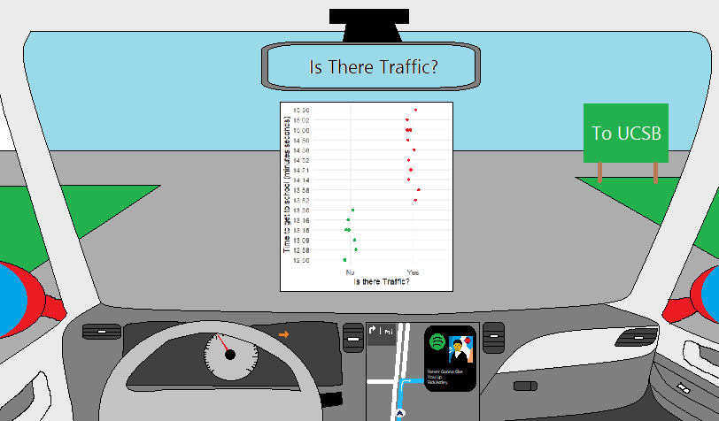
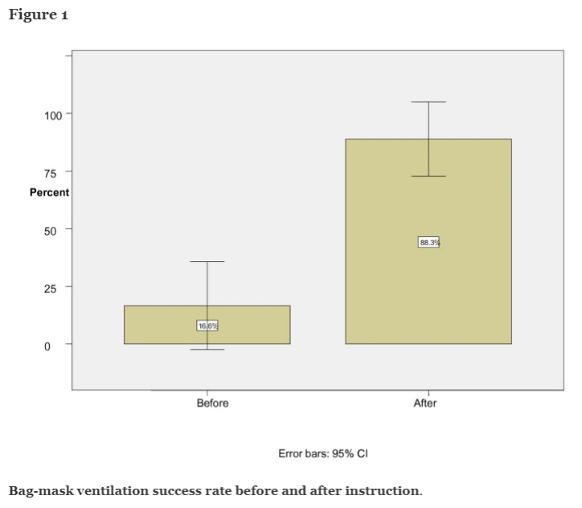

suppressPackageStartupMessages({ # remove messages when loading
# general use
library(tidyverse) # wrangle data
library(readxl) # read excel files
library(here) # file referencing
library(janitor) # cleaning/formatting data
library(GGally) # visualizing pairs
library(MuMIn) # model selection
library(ggeffects) # model predictions
# model tables
library(gtsummary) # create summary tables
library(flextable) # framework for creating tables
library(modelsummary) # summarize regression results
})
drought_exp <- read_xlsx(path = here("data",
"Valliere_etal_EcoApps_Data.xlsx"),
sheet = "First Harvest") # load datahomework-03
link to github
https://github.com/ej491143/jiao-eric-homework-03
read packages & data
clean table
# cleaning
drought_exp_clean <- drought_exp %>%
clean_names() %>% # nicer column names
mutate(species_name = case_when( # adding column with species scientific names
species == "ENCCAL" ~ "Encelia californica", # bush sunflower
species == "ESCCAL" ~ "Eschscholzia californica", # California poppy
species == "PENCEN" ~ "Penstemon centranthifolius", # Scarlet bugler
species == "GRICAM" ~ "Grindelia camporum", # great valley gumweed
species == "SALLEU" ~ "Salvia leucophylla", # Purple sage
species == "STIPUL" ~ "Nasella pulchra", # Purple needlegrass
species == "LOTSCO" ~ "Acmispon glaber" # deerweed
)) %>%
relocate(species_name, .after = species) %>% # moving species_name column after species
mutate(water_treatment = case_when( # adding column with full treatment names
water == "WW" ~ "Well watered",
water == "DS" ~ "Drought stressed"
)) %>%
relocate(water_treatment, .after = water) # moving water_treatment column after waterProblem 1. Multiple linear regression: model selection and construction (52 points)
Use the information from the homework-starter-doc.qmd to do this problem.
- Make a table or list of all the models from class and the last one you constructed on your own. Write a caption for your table. (8 points) Caption: table captions typically go above the table. Number the table and provide a title. Describe what is in the table (columns and rows).
Table: In your table, each row should be a model with the model number (1, 2, 3, etc.) and the predictors for each model.
model0 <- lm(total_g ~ 1, # formula
data = drought_exp_clean) # data frame
model1 <- lm(total_g ~ sla + water_treatment + species_name, # formula
data = drought_exp_clean) # data frame
model2 <- lm(total_g ~ sla + water_treatment, # formula
data = drought_exp_clean) # data frame
model3 <- lm(total_g ~ sla + species_name, # formula
data = drought_exp_clean) # data frame
model4 <- lm(total_g ~ water_treatment + species_name, # formula
data = drought_exp_clean) # data frame
model_list <- list( # create the list of models to be summarized
"null" = model0, # null model
"1" = model1, # model 1
"2" = model2, # model 2
"3" = model3, # model 3
"4" = model4 # model 4
)
summary_table <- modelsummary( # generate the summary table
model_list, # call up the list
title = "Model Summary Table" # add title
)
print("Figure 1. Each column represents a different model with a total of 5 models. Each row corresponds to a different observation/statistic.") # caption[1] "Figure 1. Each column represents a different model with a total of 5 models. Each row corresponds to a different observation/statistic."print(summary_table) # print table
+----------------------------------------+---------+---------+---------+---------+---------+
| | null | 1 | 2 | 3 | 4 |
+========================================+=========+=========+=========+=========+=========+
| (Intercept) | 0.279 | 0.080 | 0.047 | -0.033 | 0.055 |
+----------------------------------------+---------+---------+---------+---------+---------+
| | (0.017) | (0.056) | (0.054) | (0.067) | (0.025) |
+----------------------------------------+---------+---------+---------+---------+---------+
| sla | | 0.000 | 0.001 | 0.001 | |
+----------------------------------------+---------+---------+---------+---------+---------+
| | | (0.000) | (0.000) | (0.001) | |
+----------------------------------------+---------+---------+---------+---------+---------+
| water_treatmentWell watered | | 0.122 | 0.090 | | 0.117 |
+----------------------------------------+---------+---------+---------+---------+---------+
| | | (0.020) | (0.029) | | (0.017) |
+----------------------------------------+---------+---------+---------+---------+---------+
| species_nameEncelia californica | | 0.238 | | 0.115 | 0.218 |
+----------------------------------------+---------+---------+---------+---------+---------+
| | | (0.051) | | (0.059) | (0.032) |
+----------------------------------------+---------+---------+---------+---------+---------+
| species_nameEschscholzia californica | | 0.234 | | 0.222 | 0.232 |
+----------------------------------------+---------+---------+---------+---------+---------+
| | | (0.033) | | (0.041) | (0.032) |
+----------------------------------------+---------+---------+---------+---------+---------+
| species_nameGrindelia camporum | | 0.330 | | 0.226 | 0.313 |
+----------------------------------------+---------+---------+---------+---------+---------+
| | | (0.047) | | (0.054) | (0.032) |
+----------------------------------------+---------+---------+---------+---------+---------+
| species_nameNasella pulchra | | 0.241 | | 0.168 | 0.229 |
+----------------------------------------+---------+---------+---------+---------+---------+
| | | (0.040) | | (0.048) | (0.032) |
+----------------------------------------+---------+---------+---------+---------+---------+
| species_namePenstemon centranthifolius | | 0.061 | | -0.006 | 0.050 |
+----------------------------------------+---------+---------+---------+---------+---------+
| | | (0.039) | | (0.047) | (0.032) |
+----------------------------------------+---------+---------+---------+---------+---------+
| species_nameSalvia leucophylla | | 0.117 | | 0.139 | 0.120 |
+----------------------------------------+---------+---------+---------+---------+---------+
| | | (0.033) | | (0.041) | (0.032) |
+----------------------------------------+---------+---------+---------+---------+---------+
| Num.Obs. | 70 | 70 | 70 | 70 | 70 |
+----------------------------------------+---------+---------+---------+---------+---------+
| R2 | 0.000 | 0.755 | 0.303 | 0.610 | 0.754 |
+----------------------------------------+---------+---------+---------+---------+---------+
| R2 Adj. | 0.000 | 0.722 | 0.282 | 0.566 | 0.726 |
+----------------------------------------+---------+---------+---------+---------+---------+
| AIC | -75.2 | -157.5 | -96.4 | -127.1 | -159.2 |
+----------------------------------------+---------+---------+---------+---------+---------+
| BIC | -70.7 | -135.0 | -87.4 | -106.8 | -139.0 |
+----------------------------------------+---------+---------+---------+---------+---------+
| Log.Lik. | 39.580 | 88.741 | 52.220 | 72.538 | 88.598 |
+----------------------------------------+---------+---------+---------+---------+---------+
| RMSE | 0.14 | 0.07 | 0.11 | 0.09 | 0.07 |
+----------------------------------------+---------+---------+---------+---------+---------+
Table: Model Summary Table - Write a 5-6 sentence “statistical methods” section. (8 points) Your answer should be in paragraph form and include:
how you addressed the central question(s) (i.e. to examine the influence of ____, ____, and ____ on _____, I…) how you chose the final model (i.e. to determine the model that best described ____, I…) how you visually determined that your final model conformed to the assumptions of a linear model (i.e. to evaluate linear model assumptions, I…)
To examine how species, water treatment, and specific leaf area affects the total biomass of a plant, I made five models comparing each of the variables and then graphed their residuals. Model0 is the null model and we assume the biomass is not predicted by any of the variables, saturated model is where we say the biomass is predicted by all the variables, and the other 3 models assume different combinations of two varaibles i.e. SLA & water treatment, SLA & species, and water treatment & species. To determine which is the best model to use, I used the model.sel function in the MuMIn package and compared their AICc’s. Model 1 had the lowest AICc so it is that is the best model. I also plotted model_preds, which is a ggpredict of each model, and could clearly see that well watered plants are bigger than drought stressed plants in every species thus showing that model 1 is the best model.
- Make a visualization of the model predictions with underlying data for your “best” model. (20 points) Show and annotate all your code. For full credit:
make the underlying data more transparent than the model predictions display species names in full (not as species codes like ENCCAL or ESCCAL) display water treatment types in full (not as WW or DS) represent well-watered and drought stressed treatments with different colors use colors that are not the default ggplot() colors facet your plot by species remove the legend finalize the plot
model_preds <- ggpredict(model1,
terms = c("sla",
"water_treatment",
"species_name"))
# use View(model_preds) to see the predictions as a data frame
# use model_preds to see the predictions formatted nicely
# creating new data frame of model predictions for plotting
model_preds_for_plotting <- model_preds %>%
rename(sla = x, # renaming columns to make this easier to use
water_treatment = group,
species_name = facet)
# use View(model_preds_for_plotting)
# to compare this to the original model_preds data frame
ggplot() +
# underlying data
geom_point(data = drought_exp_clean,
aes(x = sla,
y = total_g,
color = water_treatment)) +
# model prediction 95% CI ribbon
geom_ribbon(data = model_preds_for_plotting,
aes(x = sla,
y = predicted,
ymin = conf.low,
ymax = conf.high,
fill = water_treatment),
alpha = 0.2) +
# model prediction lines
geom_line(data = model_preds_for_plotting,
aes(x = sla,
y = predicted,
color = water_treatment)) +
scale_color_manual(values = c("Well watered" = "blue", "Drought stressed" = "red")) +
scale_fill_manual(values = c("Well watered" = "blue", "Drought stressed" = "red")) +
# cleaner theme
theme_classic() +
# creating different panels for species
facet_wrap(~species_name) 
- Write a caption for your visualization. (6 points) Include a data citation.
Figure 2. Model Prediction for Model 1: This figure depicts predictions for total biomass of well watered and drought stressed plants for different species. The data (Valliere et al. 2019) shows that well watered plants all tend to be larger in biomass than drought stressed plants for all 7 tested plant species.
- Write a 3-4 sentence results section. (10 points) Your answer should be in paragraph form and address the following points:
what predictors “best” described total mass (include model statistics here)? on average, what differences did you find between water treatments? on average, what differences did you find between species?
The best predictor for total mass is when specific leaf area (SLA), water treatment, and species are all used together as it yields the lowest AIC and has the highest adjusted R² coefficient (AIC = -157.5, adjusted R² = 0.722). On average, plants in the well-watered treatment exhibited a higher total mass compared to those in the drought-stressed treatment (estimate = 0.122, SE = 0.020). Additionally, species differences were observed, with Grindelia camporum having the highest increase in mass (estimate = 0.330, SE = 0.047), followed by Encelia californica, Eschscholzia californica, and Nasella pulchra.
Problem 2. Affective visualization (24 points)
In this problem, you will create an affective visualization using your personal data in preparation for workshop during week 10.
In lecture, we talked about the three vertices of data visualization: 1) exploratory, 2) affective, and 3) communicative. We’ve done a lot of exploratory and communicative visualization, but have yet to think about affective visualization.
When thinking of affective visualization, you can expand your ideas of what data visualization could be. Some examples of affective visualizations include:
Jill Pelto’s paintings Lorraine Woodruff-Long’s warming strips quilt Stefanie Posavec and Giorgia Lupi’s Dear Data project Before starting, update your spreadsheet of observations.
- Describe in words what an affective visualization could look like for your personal data (3-5 sentences). (2 points)
Since my project is on traffic and time to get to school, my affective visualization could have colors based on traffic lights i.e. red data points for “no traffic” and green data points for “yes traffic”. If I wanted to be creative, I could draw a car and each wheel is its own graph to further demonstrate the driving symbolism. Other than that, I will try to keep the graph minimalist if I can and avoid any redundant labeling so that the graph is easy to comprehend.
Create a sketch (on paper) of your idea. (2 points) Include a photo of this sketch in your submission.

Make a draft of your visualization. (12 points) Feel free to be creative with this! You do not have to do this in R. You could create a sculpture, painting, textile object, etc.
If you are making your visualization in R, show the annotated code and the output.
If you are making your visualization outside of R, include a photo of your visualization in your submission.

- Write an artist statement. (8 points) An artist statement gives the audience context to understand your work. Write 4-5 sentences to address:
the content of your piece (what are you showing?) the influences (what did techniques/artists/etc. did you find influential in creating your work?) the form of your work (written code, watercolor, oil painting, etc.) your process (how did you create your work?)
My art piece describes what my everyday trip to school is like and it includes the graphs depicting how traffic affects my time to school. This image popped in my head when I was googling cars because coincidentally I am planning to buy a car with my parents but everything else was entirely my own imagination. My art piece is a digital art and I created this piece all in MS Paint with a mouse. My process of creating this piece is as follows: I googled what the interior of a car looks like, tried to recreate it as best as I can in MS Paint, added graph, and finally added coloring but tried to not make it too distracting.
Problem 3. Statistical critique (36 points)
At this point, you have seen and created a lot of figures for this class. Revisit the paper you chose for your critique and your homework 2, where you described figures or tables in the text. Address the following in full sentences (3-4 sentences each).
For this section of your homework, you will be evaluated on the logic, conciseness, and nuance of your critique.
- Revisit and summarize (6 points) What are the statistical tests the authors are using to address their main research question?
The authors used a paired t-test and used a p value < 0.5 for determining if the data is significant. As for a description of the graph, it is a box-and-whiskers figure with the purpose of showing the before and after success percentages after training.
Insert the figure or table you described in Homework 2 here.

- Visual clarity (10 points) How clearly did the authors visually represent their statistics in figures? For example, are the x- and y-axes in a logical position? Do they show summary statistics (means and SE, for example) and/or model predictions, and if so, do they show the underlying data?
I think the graph is pretty good at what it does as it conveys the author’s message. The graph is neat and the x- and y-axes are labelled appropriately (percent for x-axis, before and after for y-axis). This figure shows the actual success percentage with error bars of 95% confidence interval to show that the training did significantly impact the success rate.
- Aesthetic clarity (10 points) How well did the authors handle “visual clutter”? How would you describe the the data:ink ratio?
I think the authors could have made the graphs more colorful since the before and after success bars are both the same color. The graph is already pretty minimalist so the data:ink ratio is perfect; the graph is pleasant to look at and there isn’t a visual clutter.
- Recommendations (can be longer than 4 sentences, 10 points) What recommendations would you make to make the figure better? What would you take out, add, or change? Provide explanations/justifications for each of your recommendations.
Alternatively, if they did not represent their statistics in a figure, what kind of figure would you recommend to them? Describe the x- and y-axes, with any geometries and aesthetics (colors, etc.). Provide enough explanation such that someone would be able to create the figure you describe in code. Provide explanations/justifications for the figure you would recommend.
I would change the colors of the before and after bars to be grey and sapphire blue, respectively. This could better convey the emotion that there is a significant positive impact of the training. I would also move the title “Bag-mask ventilation success rate before and after instruction” to the top because graph titles are usually at the top. This can make the figure more visually pleasing and can give the audience context to whats on the graph immediately before they look at the graph. One final change I would make is I would put the 16.6% and 88.3% above the bars so it doesn’t seem claustrophobic to read.